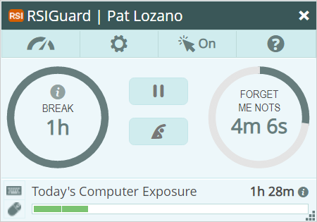

RSIGuard is the leading software tool for preventing and managing Repetitive Strain Injuries.
A Repetitive Strain Injury (RSI) is an injury that occurs over a period of time during which we repeatedly expose our bodies to minor strains without taking enough time to rest and recover. These injuries can lead to discomfort, muscle weakness, and nerve damage, which can limit your abilities, reduce your productivity, and negatively impact your life in a variety of ways.

This short video presents the benefits of each RSIGuard feature category.
RSIGuard uniquely helps you work more safely using:
A sophisticated system that guides you to rest when needed, with as little impact on your work as possible (BreakTimer, ForgetMeNots, Microbreaks, Work Restriction Manager)
Tools for reducing mouse and keyboard-related strain exposure (KeyControl hotkeys, AutoClick, Work Restriction Manager)
Tools that help you use your unique workstation more efficiently (ErgoCoach)
Objective analysis of your work patterns to prevent or diagnose the cause of problems (DataLogger, UserInsight, GroupInsight, Desktop Statistics Dashboard)